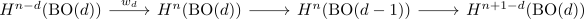

F2 cohomology of BO(d)
Proposition
Then
is an isomorphism
Proof
induction basis
follows as
which shows
where <> is maps a generator to a generator
induction step
consider the <fiber sequence>
Then this is the fibration underlying to $\gamma_d$ of the <universal> real vector bundle over $\mathrm{BO}(d)$.
then the euler formula for stiefel whitney classes shows
and applying the Gysin sequence with F2 coefficients (suppressing \(\mathbb{F}_2\)-coefficients)

now inductively we know that
and by stability of the the stiefel-whitney class we know that
is a surjection.
Thus we get short exact sequences
\begin{displaymath}
\begin{tikzcd}
0 \rar & H^*(\mathrm{BO}(d))[d] \rar{\cdot w_d} & H^*(\mathrm{BO}(d)) \rar{\pi^*} & H^*(\mathrm{BO}(d-1)) \rar \lar{s} & 0 \\
0 \rar & \mathbb{F}[w_1,...,w_d][d] \rar \uar & \mathbb{F}[w_1,...,w_d] \rar \uar{ & \mathbb{F}[w_1,...,w_{d-1}]\rar \uar{\cong} \lar{s}& 0
\end{tikzcd}
\end{displaymath}where by induction the right map is an isomorphism and $s$ is defined as splitting given by
now pick $x \in H^*(\mathrm{BO}(d))$, then $x = s \pi^*(*) + w_d \gamma$
-missing
now the middle vertical map is degreewise surjective.
Now by similar argument we may argue that the middle vertical map is injective